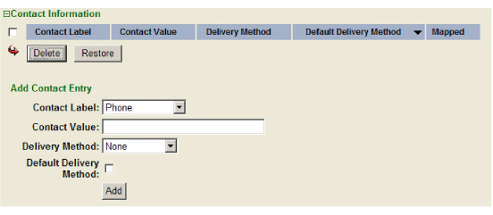

|
IdentityGuard Server 12.0 Administration Guide |
|
IdentityGuard Server 12.0 Administration Guide |
Create contact information entries to store a user’s contact information, such as phone numbers or email addresses.
To create contact information for a user
1. Log in to the Entrust IdentityGuard Administration interface as the administrator.
 On the
Windows computer where Entrust IdentityGuard is installed
On the
Windows computer where Entrust IdentityGuard is installed
2. In the main menu, click User Accounts.
The User Accounts page appears.
3. Find a specific user in one of two ways:
● use the Go To Account tab (see To search for information about one user)
● use the Find Accounts tab (see To search for information about one or more users)
The View Account page appears.
4. Click Edit Account. The Edit Account page appears.
5. Click Contact Information to expand the Contact Information pane.
Note: If your system is configured for contact information mapping from an LDAP user repository, you may see existing contact information. See Map contact info from an LDAP directory.

6. In the Contact Information pane, under Add Contact Entry:
a. In the Contact Label drop-down list, select a label for the contact information entry.
If you select Custom Label, the drop-down list changes to a text field. Enter the label in this text field and press Enter. To cancel this action, press the ESC (Escape) key.
b. In the Contact Value field, enter the value of the label. For example, if the entry is an email address, enter the email address in this field. For information describing the rules for entering international telephone numbers when using Authentify, see Authentify international telephone number rules.
An empty value for a contact info entry is permitted if the corresponding delivery mechanism allows it. Currently, only the NONE delivery mechanism allows a contact info entry with no value.
c. In the Delivery Method drop-down list, select an out-of-band delivery configuration.
All out-of-band delivery methods in the Delivery Method drop-down list are defined in the identityguard.properties file. See Configuring delivery mechanisms for one-time passwords . If there are no configurations in the identityguard.properties file, or you do not want to associate this entry with an out-of-band delivery configuration, select None.
d. To specify this contact information entry as the default way to send the user information, select Default Delivery Method.
e. Click Add.
The contact information entry is added to the list. You can add as many entries as required within the limit set by policy. See Configuring user data policies.
7. Click Save Changes to update the user account and return to the View Account page.